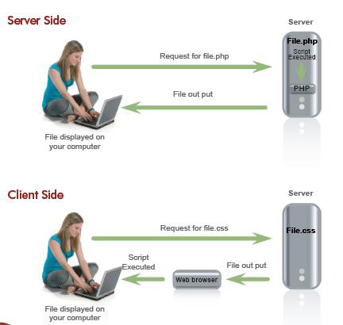

Foi durante a Segunda Guerra Mundial que ocorreram as grandes descobertas tecnológicas da eletrônica: o primeiro computador programável e o transistor, a fonte da microeletrônica, foram o verdadeiro coração do desenvolvimento da tecnologia da informação no século XX. Mas não foi até a década de 1970 que as novas tecnologias da informação se tornaram difundidas. Em meados do século 20, sem acesso à Internet, era difícil para as pessoas se comunicarem. A invenção da Internet permitiu que as pessoas tivessem conversas cara a cara via Skype, Facebook, streaming. Adicionar novas tecnologias às mais antigas leva a mais oportunidades para empresas e clientes. A tecnologia se tornará mais fácil de usar, mais acessível e mais rápida no futuro.
As linguagens client-side são linguagens onde apenas o seu navegador vai entender. Quem vai processar essa linguagem não é o servidor, mas o seu browser (Chrome, IE, Firefox, Brave). Significa "lado do cliente", ou seja, aplicações que rodam no computador do usuário sem necessidade de processamento de seu servidor para efetuar determinada tarefa.
Exemplos de linguagem
As linguagens server-side são linguagens que o SERVIDOR entende, aplicações que rodam no servidor. Isso quer dizer que você vai escrever um código onde o servidor vai processá-lo e então vai mandar para o seu navegador a resposta. Se criarmos um script em linguagem back-end que apenas calcula uma soma simples, será o SERVIDOR que calculará este resultado. Se fizermos esse cálculo em alguma linguagem front-end, como o JavaScript, quem calculará essa conta é o browser do usuário.

"Exemplos de linguagem
O HTML existe desde sua criação em 1991 e atualmente está em sua 5ª edição, está repleto de recursos e funcionalidades que trazem melhorias para o desenvolvimento web, e sua principal responsabilidade é delinear a estrutura das páginas web. Essa estrutura HTML consiste em um conjunto de elementos, conhecidos como hipertexto, que são conectados entre si para formar uma página. Os elementos HTML, também conhecidos como tags HTML, são usados para informar ao navegador que tipo de estrutura está sendo construída, podendo ser títulos, parágrafos, imagens, links, etc. Assim, para que um documento seja interpretado por um navegador, o arquivo deve ter a extensão .html e, a partir daí, pode ser exibido por qualquer navegador web. As tags são formadas por uma estrutura própria, iniciam com o sinal “menor que”, em seguida vem o nome daquele elemento e por fim, o sinal “maior que”. Podem ser dispostas em tags que precisam de fechamento e tags que fecham sozinhas (self-closing). O fechamento de uma tag será definido com uma barra (/), sendo que no caso das tags de auto fechamento, não há necessidade da presença desse caractere.
A principal diferença entre a lista ordenada e a lista não-ordenada está na maneira com que os itens de cada lista são apresentados - a lista ordenada enumera os elementos; a lista não-ordenada coloca marcadores antes de cada elemento. O uso de números induz o leitor a esperar uma seqüência coerentemente ordenada de itens. O uso de marcadores induz o leitor a esperar uma coleção de itens (que não precisa ter, necessariamente, uma ordem). Uma lista ordenada é delimitada pelas etiquetas < OL> e < /OL> (Ordered List). Cada item da lista é delimitado pelas etiquetas < LI> e < /LI> (List Item). A estrutura da lista não-ordenada é semelhante a da lista ordenada - porém, ao invés de ser construída com o elemento OL, é construída com o elemento UL (Unordered List).